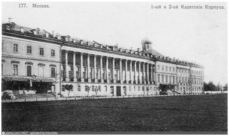
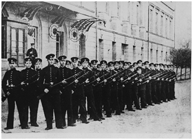

2-й Московский Императора Николая II кадетский корпус был открыт 6 декабря 1849 г. и первоначально назывался 2-й Московский кадетский корпус (1849-1864).

Здание, в котором размещались 1-й и 2-й кадетские корпуса. Почтовая открытка.
Проект создания корпуса был подготовлен по высочайшему повелению Главным начальником военно-учебных заведений великим князем Михаилом Павловичем и утвержден Николаем I еще в конце 1837 г., однако открытие корпуса затянулось до 1849 г. Корпус был размещен в одном здании с 1-м Московским кадетским корпусом.
Среди преподавателей 2-го Московского корпуса, многие из которых пользовались заслуженным авторитетом и почетной известностью в педагогическом мире, был особенно известен П.Е. Басистов, автор «Хрестоматии для средних учебных заведений».
В 1864 г. 2-й Московский корпус, как и другие кадетские корпуса, был преобразован во 2-ю Московскую военную гимназию. 10 июля 1864 г. директором 2-й Московской гимназии был назначен генерал-майор П.И. Мезенцов, который, несмотря на трудности преобразования одного учебного заведения в другое, сумел сплотить вокруг себя преподавателей, грамотно организовать учебный процесс и настроить на правильный лад кадет. В жизни корпуса мезенцовский период признается одним из самых плодотворных.
В 1882 г. военная гимназия была вновь преобразована во 2-й Московский кадетский корпус (1882-1896). С восстановлением кадетских корпусов 2-й Московский кадетский корпус стал привлекаться к сопровождению императора во время строевых смотров. Кадеты корпуса также принимали участие в коронационных мероприятиях по случаю восшествия на престол императора Николая II.
В 1896 г. в 100-летнюю годовщину рождения императора Николая I некоторым сформированным в его царствие частям и учреждениям, в том числе и 2-му Московскому кадетскому корпусу, высочайшим указом было велено присоединить к их наименованию имя императора Николая I. С того времени корпус стал именоваться 2-м Московским Императора Николая I кадетским корпусом (1896-1918), а на погонах его воспитанников стал выбиваться вензель императора под императорской короной.

Кадеты на занятиях по строевой подготовке. Фотография. 1899 г.
2-й Мосаковский кадетский корпус дал России множество выдающихся деятелей. 25 его выпускников стали генералами, среди которых наиболее высоких позиций добился В.В. Сахаров, ставший генералом от кавалерии и начальником Главного штаба. Воспитанниками корпуса были знаменитый русский писатель А.И. Куприн, известный во всем мире композитор А.Н. Скрябин, художник и беллетрист Н.Н. Каразин и многие другие.
События 1917 г. кадеты 2-го Московского корпуса в прямом смысле восприняли в штыки.
Они были потрясены отречением царя и распоряжениями Временного правительства, отказывались выполнять приказы, касавшиеся снятия погон, отмены отдания чести и запрещения исполнения царского гимна. В октябре 1917 г. многие из них вместе с кадетами 1-го кадетского корпуса выступили против новой власти.
В начале 1918 г. корпус прекратил свое существование.